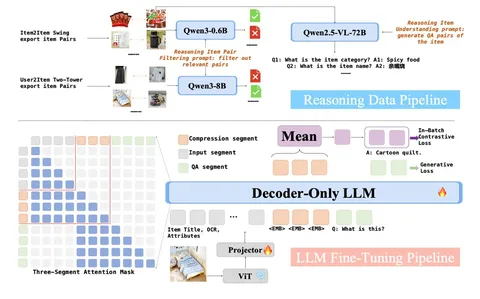

Сегодня разбираем статью от Kuaishou о том, как использовать LLM для формирования семантических фичей в ранжирующих моделях.
В индустрии для ранжирования используют трансформеры. История действий пользователя представляется в виде последовательности айтемов, и модель учится предсказывать на её основе, будет ли релевантен тот или иной новый айтем из числа кандидатов.
Когда последовательности становятся длинными, используют двухэтапную схему:
1) General Search Unit (GSU) выбирает из истории пользователя айтемы, наиболее близкие к текущему кандидату;
2) Exact Search Unit (ESU) точно оценивает релевантность кандидата по этой сжатой истории.
Такая схема давно устоялась и хорошо работает. Но в ней всё критически зависит от того, какие именно эмбеддинги используются для айтемов. Классические модели опираются на ID-based-эмбеддинги. Авторы формулируют фундаментальные ограничения такого подхода:
- низкая информативность (эмбеддинг не раскрывает семантику);
- изолированность знаний;
- слабая генерализация без постоянного дообучения;
- проблемы long-tail и cold start.
LLM-эмбеддинги выглядят как альтернатива: они содержат плотную семантику, обобщают знания и хорошо генерализуют. Но на практике их использование в «зафриженном» виде даёт лишь ограниченный прирост качества.
Причина в рассинхроне с задачей рекомендаций:
- Representation Unmatch — LLM понимает айтем, но не его релевантность пользователю;
- Representation Unlearning — эмбеддинги нельзя обучать end-to-end вместе с моделью.
QARM V2 решает эту проблему, адаптируя LLM-эмбеддинги под задачу рекомендаций через механизм Reasoning Item Alignment. Идея подхода в том, чтобы затюнить LLM под генерацию эмбеддингов, одновременно отражающих хорошее понимание айтемов и способных предсказывать их со-встречаемость:
1) на основе коллаборативных моделей собираются item-item-пары в качестве таргета для контрастивного обучения;
2) пары фильтруются, убирается шум и bias на популярные айтемы;
3) для айтемов также генерируются QA-пары в качестве таргета для генерации ответов;
4) обучение идёт по схеме «входные данные -> EMB-токены –> генерация ответов + контрастивный лосс».
Важно, что контрастивный лосс считается по EMB-токенам, и через них же модель отвечает на заранее подготовленные вопросы. В итоге всё понимание айтема сжимается в компактный эмбеддинг, — одновременно семантический и коллаборативный.
Вторая часть пайплайна — построение semantic IDs через квантизацию. Базовый Residual KMeans хорошо ловит грубую семантику, но даёт много коллизий (разные айтемы получают одинаковые коды).
Авторы предлагают гибрид, в котором верхние уровни (Residual KMeans) захватывают грубую семантику, а последний (FSQ) помогает различать близкие айтемы и снижает коллизии.
Дальше подход встраивается в обычную схему GSU/ESU. Сначала с помощью полученных LLM эмбеддингов из истории пользователя выбираются наиболее близкие кандидату айтемы, а затем уже в ESU используются semantic IDs как признаки для более точного ранжирования.
Важно, что эмбеддинги для semantic IDs обучаются end-to-end вместе с ранжирующей моделью, в отличие от зафриженных LLM-эмбеддингов.
По результатам всё выглядит ожидаемо «сильным»: стабильные улучшения в офлайн-метриках, заметный буст в cold-start-сценариях, снижение количества коллизий после новой квантизации. Основные бизнес-метрики (CTR, GMV) демонстрируют ощутимые приросты в онлайн-экспериментах.
В целом работа показывает, что ключевой эффект даёт не просто использование эмбеддингов из LLM, а их правильный алайнмент под задачу рекомендаций.
@RecSysChannel
Разбор подготовила
